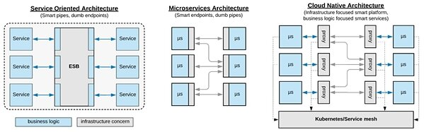

关键要点
- 微服务架构仍然是分布式系统最流行的架构风格。 但 Kubernetes 和云原生运动已经在很大程度上重新定义了应用程序的设计和开发。
- 在云原生平台上，服务的可观察性是不够的。更基本的先决条件是通过实施健康检查，对信号做出反应，声明资源消耗等，使微服务自动化。
- 在后 Kubernetes 时代，服务网格技术将完全取代使用库来实现操作网络问题（例如 Hystrix 断路器）。
- 微服务现在必须通过从多个维度实现幂等性来设计用于“恢复”。
- 现代开发人员必须精通编程语言以实现业务功能，并且同样精通云原生技术以满足非功能性基础架构级别要求。
微服务炒作开始于一堆关于组织结构、团队规模、服务规模、重写和抛出服务而不是修复、避免单元测试等的极端想法。根据我的经验，大多数这些想法被证明是错误的，不实用的或者至少不通用。 如今，大多数剩余的原则和实践都是如此通用和松散地定义，以至于它们可能在未来许多年内都会成立，而在实践中却没有多大意义。
在Kubernetes诞生的前几年微服务还是分布式系统最流行的架构风格。但Kubernetes和云原生运动已经改变了应用程序设计和开发的方方面面。在本文中，我要质疑微服务的一些理念，指明它们在后Kubernetes时代不会再像以前那样强大。
不仅可观察，而且还有自动化服务
可观察性从一开始就是微服务的基本原则。 虽然对于一般的分布式系统来说它是正确的，但今天（特别是在 Kubernetes 上），它的很大一部分是平台级别的开箱即用（例如进程运行状况检查、CPU 和内存消耗）。最低要求是应用程序以 JSON 格式登录控制台。 从那时起，平台可以跟踪资源消耗、请求跟踪、收集所有类型的指标、错误率等，而无需太多的服务级别开发工作。
在云原生平台上，可观察性是不够的。更基本的先决条件是通过实施健康检查，对信号做出反应，声明资源消耗等使微服务自动化 。可以将几乎任何应用程序放入容器中运行。但是要创建一个容器化的应用程序，可以通过云原生平台自动化和协调编排，需要遵循一定的规则。遵循这些 原则和模式 ，将确保生成的容器在大多数容器编排引擎中表现得像一个优秀的云原生公民，允许以自动方式对它们进行调度、扩展和监控。
我们希望平台不必观察服务中发生的情况，而是希望平台检测异常情况并按照声明进行协调。无论是通过停止将流量导向服务实例、重启、向上和向下扩展，还是将服务迁移到另一个健康主机，重试失败的请求或其他，这都无关紧要。如果服务是自动化的，则所有纠正措施都会自动发生，我们只需要描述所需的状态，而不是观察和反应。服务应该是可观察的，但也可以在没有人为干预的情况下通过平台自动进行整改。
智能平台和智能服务，但有正确的责任
在从 SOA 转向微服务世界的过程中， “智能端点和哑管”的概念是服务交互的另一个根本转变。在微服务领域，服务不依赖于集中式智能路由层的存在，而是依赖于拥有某些平台级功能的智能端点。这是通过在每个微服务中嵌入传统 ESB 的一些功能并转换到没有业务逻辑元素的轻量级协议来实现的。
虽然这仍然是在不可靠的网络层（使用 Hystrix 等库 ） 实现服务交互的流行方式 ，但现在，在后 Kubernetes 时代，它已经完全被服务网格技术所取代 。有趣的是，服务网格甚至比传统的 ESB 更智能。网格可以执行动态路由、服务发现、基于延迟的负载平衡、响应类型、指标和分布式跟踪、重试、超时，你能想到的这里都有。
与 ESB 的不同之处在于，与服务网格不同的是，只有一个集中路由层，每个微服务通常都有自己的路由器—— 一个带有附加中央管理层的代理逻辑的 sidecar 容器。 更重要的是，管道（平台和服务网格）没有任何业务逻辑；它们完全专注于基础架构方面，使服务专注于业务逻辑。 如图所示，这代表了 ESB 和微服务学习的演变，以适应云环境的动态和不可靠特性。

SOA vs MSA 与 CNA
查看服务的其他方面，我们注意到云原生不仅影响端点和服务交互。Kubernetes 平台（包含所有其他技术）还负责资源管理、调度、部署、配置管理、扩展、服务交互等。而不是再次将其称为“智能代理和哑管”，我认为它更好地描述作为一个具有正确职责的智能平台和智能服务。这不仅仅是关于端点；它是一个完整的平台，可以自动化业务功能服务的所有基础架构方面。
不要面向失败而设计，要面向恢复设计
在基础架构和网络本身不可靠的云原生环境中运行的微服务必须针对故障进行设计。 这毫无疑问。 但是平台检测到并处理了越来越多的故障，并且从微服务中捕获故障的量较少。相反，考虑通过从多个维度实现幂等性来设计您的恢复服务。
容器技术、容器编排器和服务网络可以检测并从许多故障中恢复：无限循环——CPU 分配、内存泄漏和 OOM——运行状况检查、磁盘占用——配额、fork 炸弹——进程限制、批量处理和进程隔离——内存限制、延迟和基于响应的服务发现、重试、超时、自动扩展等等。更不用说，过渡到无服务器模型，服务只需要在几毫秒内处理一个请求，而垃圾收集、线程池、资源泄漏也越来越不需要关心。
通过平台处理所有这些以及更多内容，将您的服务视为一个密封的黑盒子，它将多次启动和停止，使服务能够重新启动。您的服务将按比例放大和缩小倍数，通过使其无状态，使其可以安全地进行扩展。假设许多传入请求最终会超时，使端点具有幂等性。假设许多传出请求将暂时失败，平台将为您重试它们，确保您使用幂等服务。
为了适合云原生环境中的自动化，服务必须是：
- 幂等重启（服务可以被杀死并多次启动）。
- 幂等扩展/缩小（服务可以自动扩展到多个实例）。
- 幂等服务生产者（其他服务可能会重试调用）。
- 幂等服务使用者（服务或网状网可以重试传出调用）。
如果您执行上述操作一次或多次时服务的行为始终相同，那么平台将能够在没有人为干预的情况下从故障中恢复您的服务。
最后，请记住，平台提供的所有恢复只是本地优化。正如 Christian Posta 所说的那样 ，分布式系统中的应用程序安全性和正确性仍然是应用程序的责任。 整个业务流程范围的思维模式（可能跨越多个服务）对于设计整体稳定的系统是必要的。
混合开发职责
越来越多的微服务原则被 Kubernetes 及其补充项目实施和提供。因此，开发人员必须精通编程语言以实现业务功能，并且同样精通云原生技术以满足非功能性基础架构级别要求，同时完全实现功能。
业务需求和基础架构（操作或跨功能需求或系统质量属性）之间的界限总是模糊不清，并且不可能采取一个方面并期望其他人做另一个方面。 例如，如果在服务网格层中实现重试逻辑，则必须使服务中的业务逻辑或数据库层使用的服务具有幂等性。 如果在服务网格级别使用超时，则必须同步服务中的服务使用者超时。如果必须实现服务的重复执行，则必须配置 Kubernetes 作业执行。
展望未来，一些服务功能将作为业务逻辑在服务中实现，而其他服务功能则作为平台功能提供。虽然使用正确的工具来完成正确的任务是一个很好的责任分离，但技术的激增极大地增加了整体的复杂性。在业务逻辑方面实现简单的服务需要很好地理解分布式技术堆栈，因为责任分散在每一层。
据 证实 Kubernetes 是可以扩展到数千个节点、数万个 pod 和数百万的 TPS。您的应用程序大小、复杂性，或者说是引入“云原生”复杂性的关键性因素，我还不清楚。
结论
有趣的是，微服务运动如何为采用 Docker 和 Kubernetes 等容器技术提供了如此大的动力。 虽然最初是推动这些技术发展的微服务实践，但现在 Kubernetes 定义了微服务架构的原则和实践。
最近的一个例子，我们距离接受函数模型作为有效的微服务原语并不远，而不是将其视为纳米服务的反模式。我们并没有充分的理由质疑云原生技术对于中小型案例的实用性和适用性，而是因为兴奋而有些不经意地跳了起来。
Kubernetes 拥有 ESB 和微服务的许多知识，因此，它是最终的分布式系统平台。 它是架构风格的技术，而不是相反的方式。无论好坏，时间会证明一切。
关于作者

Bilgin Ibryam （@bibryam）是 Red Hat 的首席架构师，提交者和 ASF 成员。 他是一名开源传播者，博客作者，《Camel Design Patterns》 和 《Kubernetes Patterns》 书籍的作者。 在他的日常工作中，Bilgin 喜欢指导编码和领导开发人员成功构建云原生解决方案。 他目前的工作重点是应用程序集成、分布式系统、消息传递、微服务、devops 和一般的云原生挑战。 你可以在 Twitter、Linkedin 或他的 博客 上找到他 。